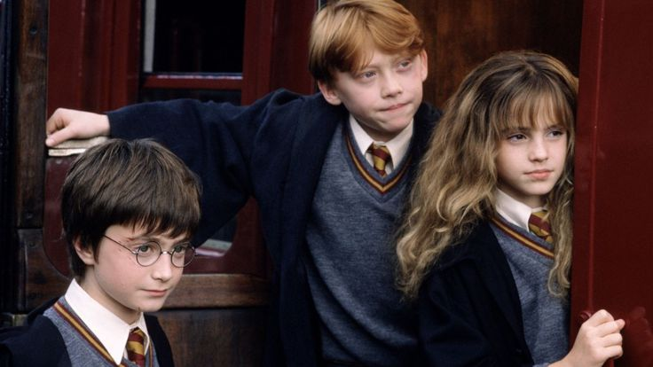

Informações principais:
| Data de lançamento | Diretor | Duração |
|---|---|---|
| 23 de novembro de 2001 (Brasil) | Chris Columbus | 2h 32min |
Trailer oficial:
Sinopse:
A história acompanha Harry Potter, um garoto de 11 anos que vive com seus tios e desconhece sua verdadeira origem. No seu aniversário, ele descobre que é um bruxo e recebe um convite para estudar na Escola de Magia e Bruxaria de Hogwarts. Lá, faz amizade com Ron Weasley e Hermione Granger, aprende magia e começa a desvendar o mistério da Pedra Filosofal, um objeto lendário capaz de conceder vida eterna e transformar metais em ouro.
Enquanto explora os segredos de Hogwarts, Harry também descobre mais sobre o passado de seus pais e sobre a ameaça representada por Lord Voldemort, o bruxo das trevas responsável pela morte de sua família. O filme mistura fantasia, aventura e amizade, apresentando o universo mágico que dá início à saga de Harry Potter.
Elenco principal
| Personagem | Ator/Atriz | Idade |
|---|---|---|
| Harry Potter | Daniel Radcliffe | 37 anos |
| Ron Weasley | Rupert Grint | 38 anos |
| Hermione Granger | Emma Watson | 36 anos |
| Albus Dumbledore | Richard Harris | Faleceu aos 72 anos |
| Rubeus Hagrid | Robbie Coltrane | Faleceu aos 72 anos |
| Severus Snape | Alan Rickman | Faleceu aos 69 anos |
| Draco Malfoy | Tom Felton | 39 anos |
| Neville Longbottom | Matthew Lewis | 37 anos |
Minha avaliação
9,5/10
A magia começa aqui
Contém spoilers!
Esse filme tem um lugar especial no meu coração porque representa o início de tudo. É impossível não se emocionar ao rever Harry recebendo sua carta, conhecendo o Beco Diagonal e entrando em Hogwarts pela primeira vez.
A direção de Chris Columbus conseguiu transformar as descrições dos livros em imagens que marcaram gerações. O castelo, o Grande Salão, o Expresso de Hogwarts, o Quadribol e a cerimônia de seleção são elementos que parecem ter saído diretamente da imaginação de quem leu os livros.
A trilha sonora de John Williams é maravilhosa e contribui muito para essa sensação de encantamento. O filme possui uma inocência e um aconchego que os capítulos posteriores naturalmente perdem à medida que a história se torna mais sombria.
E, sinceramente, considero essa uma das adaptações mais fiéis da saga. Isso não significa que seja perfeita. A cena das provas para chegar à Pedra Filosofal, por exemplo, corta desafios importantes do livro, especialmente o enigma das poções de Snape, que destaca a inteligência e a capacidade de raciocínio de Hermione.
Também faltam detalhes sobre a vida de Harry com os Dursley, algumas partidas de Quadribol, o encontro anterior com Draco no Beco Diagonal e outras pequenas situações que ajudam a construir o universo mágico. São cortes que não destroem a narrativa, mas deixam o mundo menos rico do que nas páginas.
Mesmo assim, o filme apresenta muito bem os personagens e estabelece a base emocional de toda a saga. É uma aventura que funciona tanto para crianças quanto para adultos, especialmente para quem cresceu acompanhando Harry.
Minha conclusão: um clássico absoluto. Pode não ser o filme mais complexo, mas é responsável por nos apresentar um universo pelo qual tantas pessoas se apaixonaram. E isso, para mim, é uma conquista enorme.